용접기능사 (2016-01-24 기출문제)
1과목: 용접일반
1. 플래시용접(flash welding)법의 특징으로 틀린 것은?
- 가열 범위가 좁고 열영향부가 적으며 용접속도가 빠르다.
- 용접면에 산화물의 개입이 적다.
- 종류가 다른 재료의 용접이 가능하다.
- 용접면의 끝맺음 가공이 정확하여야 한다.
(정답률: 55%)

2. 아크 쏠림의 방지대책에 관한 설명으로 틀린 것은?
- 교류용접으로 하지 말고 직류용접으로 한다.
- 용접부가 긴 경우는 후퇴법으로 용접한다,
- 아크 길이는 짧게 한다.
- 접지부를 될 수 있는 대로 용접부에서 멀리한다.
(정답률: 78%)
3. C02 가스 아크 용접 결합에 있어서 다공성이란 무엇을 의미하는가?
- 질소, 수소, 일산화탄소 등에 의한 기공을 말한다.
- 와이어 선단부에 용적이 붙어 있는 것을 말한다.
- 스패터가 발생하여 비드의 외관에 붙어 있는 것을 말한다.
- 노즐과 모재간 거리가 지나치게 작아서 와이어 송급 불량을 의미한다.
(정답률: 78%)
4. 박판의 스테인리스강의 좁은 홈의 용접에서 아크 교란 상태가 발생할 때 적합한 용접방법은?
- 고주파 펄스 티그 용접
- 고주파 펄스 미그 용접
- 고주파 펄스 일렉트로 슬래그 용접
- 고주파 펄스 이산화탄소 아크 용접
(정답률: 61%)
5. 용접 이음의 종류가 아닌 것은?
- 겹치기 이음
- 모서리이음
- 라운드 이음
- T형 필릿 이음
(정답률: 76%)
6. 서브머지드 아크 용접봉 와이어 표면에 구리를 도금한 이유는?
- 접촉 팁과의 전기 접촉을 원활히 한다.
- 용접 시간이 짧고 변형을 적게 한다.
- 슬래그 이탈성을 좋게 한다.
- 용융 금속의 이행을 촉진시킨다.
(정답률: 73%)
7. 기계적 접합으로 볼 수 없는 것은?
- 볼트 이음
- 리벳 이음
- 접어 잇기
- 압접
(정답률: 68%)
8. 용접부의 연성결함을 조사하기 위하여 사용되는 시험법은?
- 브리넬 시험
- 비커스 시험
- 굽힘 시험
- 충격 시험
(정답률: 74%)
9. 다음이 설명하고 있는 현상은?
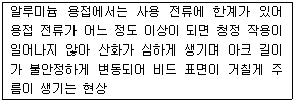
- 번 백(burn back)
- 퍼커링(puckering)
- 버터링(buttering)
- 멜트 백킹(melt banking)
(정답률: 62%)
10. 화재의 분류 중 C급 화재에 속하는 것은?
- 전기 화재
- 금속 화재
- 가스 화재
- 일반 화재
(정답률: 75%)
11. 용접 작업시 전격 방지대책으로 틀린 것은?
- 절연 홀더의 절연부분이 노출, 파손되면 보수하거나 교체한다.
- 홀더나 용접봉은 맨손으로 취급한다.
- 용접기의 내부에 함부로 손을 대지 않는다.
- 땀, 물 등에 의한 습기찬 작업복, 장갑, 구두 등을 착용하지 않는다.
(정답률: 89%)
12. 용접 자세를 나타내는 기호가 틀리게 짝지어진 것은?(오류 신고가 접수된 문제입니다. 반드시 정답과 해설을 확인하시기 바랍니다.)
- 위보기자세 : OH
- 수직자세: V
- 아래보기자세 : U
- 수평자세: H
(정답률: 73%)
13. 플라스마 아크 용접의 특징으로 틀린 것은?
- 용접부의 기계적 성질이 좋으며 변형도 적다.
- 용입이 깊고 비드 폭이 좁으며 용접속도가 빠르다.
- 단층으로 용접할 수 있으므로 능률적이다.
- 설비비가 적게 들고 무부하 전압이 낮다.
(정답률: 77%)
14. 다음 중 귀마개를 착용하고 작업하면 안되는 작업자는?
- 조선소의 용접 및 취부작업자
- 자동차 조립공장의 조립작업자
- 강재 하역장의 크레인 신호자
- 판금작업장의 타출 판금작업자
(정답률: 84%)
15. 이산화탄소 아크 용접의 보호가스 설비에서 저전류 영역의 가스유량은 약 몇L/min 정도가 가장적당한가?
- 1~5
- 6~9
- 10~15
- 20~25
(정답률: 66%)
16. 가용접에 대한 설명으로 틀린 것은?
- 가용접 시에는 본 용접보다도 지름이 큰 용접봉을 사용하는 것이 좋다.
- 가용접은 본 용접과 비슷한 기량을 가진 용접사에 의해 실시되어야 한다.
- 강도상 중요한 곳과 용접의 시점 및 종점이 되는 끝 부분은 가용접을 피한다.
- 가용접은 본 용접을 실시하기 전에 좌우의 홈 또는 이음부분을 고정하기 위한 짧은 용접이다.
(정답률: 68%)
17. 지름이 10cm인 단면에 8000kgf의 힘이 작용할 때 발생하는 응력은 약 몇 kgf/cm2인가?
- 89
- 102
- 121
- 158
(정답률: 55%)
18. 용접 자동화의 장점을 설명한 것으로 틀린 것은?
- 생산성 증가 및 품질을 향상시킨다.
- 용접조건에 따른 공정을 늘일 수 있다.
- 일정한 전류 값을 유지할 수 있다.
- 용접와이어의 손실을 줄일 수 있다.
(정답률: 68%)
19. 용접 열원을 외부로부터 공급 받는 것이 아니라, 금속산화물과 알루미늄간의 분말에 점화제를 넣어 점화제의 화학반응에 의하여 생성되는 열을 이용한 금속 용접법은?
- 일렉트로 슬래그 용접
- 전자 빔 용접
- 테르밋 용접
- 저항 용접
(정답률: 78%)
20. 서브머지드 아크 용접에 관한 설명으로 틀린 것은?
- 아크발생을 쉽게하기 위하여 스틸 울(steel wool)을 사용한다.
- 용융속도와 용착속도가 빠르다.
- 홈의 개선각을 크게 하여 용접효율을 높인다.
- 유해 광선이나 흄(fume) 등이 적게 발생한다.
(정답률: 53%)
21. 서브머지드 아크 용접부의 결함으로 가장 거리가 먼 것은?
- 기공
- 균열
- 언더컷
- 용착
(정답률: 60%)
22. 현미경 시험을 하기 위해 사용되는 부식제 중 철강용에 해당되는 것은?
- 왕수
- 염화제2철용액
- 피크린산
- 플루오르화수소액
(정답률: 58%)
23. 피복 아크 용접에서 일반적으로 가장 많이 사용되는 차광유리의 차광도 번호는?
- 4~5
- 7~8
- 10~11
- 14~15
(정답률: 67%)
24. 아세틸렌 가스의 성질 중 15℃ 1기압에서의 아세틸렌 1리터의 무게는 약 몇 g 인가?
- 0. 151
- 1. 176
- 3. 143
- 5. 117
(정답률: 71%)
25. 피복 매합제의 성분 중 탈산제로 사용되지 않는 것은?
- 규소철
- 망간철
- 알루미늄
- 유황
(정답률: 67%)
26. 고셀룰로오스계 용접봉은 셀룰로오스를 몇 %정도 포함하고 있는가?
- 0~5
- 6~15
- 20~30
- 30~40
(정답률: 60%)
27. 가스 용접의 특징으로 틀린 것은?
- 응용 범위가 넓으며 운반이 편리하다.
- 전원 설비가 없는 곳에서도 쉽게 설치할 수 있다.
- 아크 용접에 비해서 유해 광선의 발생이 적다.
- 열집중성이 좋아 효율적인 용접이 가능하여 신뢰성이 높다.
(정답률: 61%)
28. 가스 용접에서 모재의 두께가 6㎜일 때 사용되는 용접봉의 직경은 얼마인가?
- 1㎜
- 4㎜
- 7㎜
- 9㎜
(정답률: 76%)
29. 규격이 AW 300인 교류 아크 용접기의 정격 2차 전류 조정 범위는?
- 0~300A
- 20~220A
- 60~330A
- 120~430A
(정답률: 62%)
30. 직류아크용접기로 두께가 15mm이고, 길이가 5m인 고장력 강판을 용접하는 도중에 아크가 용접봉 방향에서 한쪽으로 쏠리었다. 다음 중 이러한 현상을 방지하는 방법이 아닌 것은?
- 이음의 처음과 끝에 엔드 탭을 이용한다.
- 용량이 더 큰 직류용접기로 교체한다.
- 용접부가 긴 경우에는 후퇴 용접법으로 한다.
- 용접봉 끝을 아크쏠림 반대 방향으로 기울인다.
(정답률: 74%)
31. 피복 아크 용접시 아크 열에 의하여 용접봉과 모재가 녹아서 용착금속이 만들어 지는데 이때 모재가 녹은 깊이를 무엇이라 하는가?
- 용융지
- 용입
- 슬래그
- 용적
(정답률: 75%)
32. 다음 중 두꺼운 강판, 주철, 강괴 등의 절단에 이용되는 절단법은?
- 산소창 절단
- 수중절단
- 분말 절단
- 포갬 절단
(정답률: 69%)
33. 가스절단에 이용되는 프로판가스와 아세틸렌가스를 비교하였을 때 프로판가스의 특징으로 틀린 것은?
- 절단면이 미세하며 깨끗하다.
- 포갬 절단 속도가 아세틸렌보다 느리다.
- 절단 상부 기슭이 녹은 것이 적다.
- 슬래그의 제거가 쉽다.
(정답률: 61%)
34. 용접법의 분류 중 압접에 해당하는 것은?
- 테르밋 용접
- 전자 빔 용접
- 유도가열 용접
- 탄산가스 아크 용접
(정답률: 50%)
35. 교류아크용접기의 종류에 속하지 않는 것은?
- 가동코일형
- 탭전환형
- 정류기형
- 가포화 리액터형
(정답률: 64%)
2과목: 용접재료
36. 피복아크용접봉은 금속심선의 겉에 피복제를 발라서 말린 것으로 한쪽 끝은 홀더에 물려 전류를 통할 수 있도록 심선길이의 얼마만큼을 피복하지 않고 남겨 두는가?
- 3㎜
- 10㎜
- 15㎜
- 25㎜
(정답률: 51%)
37. 가스용기를 취급할 때의 주의사항으로 틀린 것은?
- 가스용기의 이동시는 밸브를 잠근다.
- 가스용기에 진동이나 충격을 가하지 않는다.
- 가스용기의 저장은 환기가 잘되는 장소에 한다.
- 가연성 가스용기는 눕혀서 보관한다.
(정답률: 83%)
38. 강재 표면의 흠이나 개재물, 탈탄층 등을 제거하기 위해 얇고, 타원형 모양으로 표면을 깎아내는 가공법은?
- 가스 가우징
- 너깃
- 스카핑
- 아크 에어 가우징
(정답률: 77%)
39. 니켈-크롬 합금 중 사용한도가 1000℃까지 측정할 수 있는 합금은?
- 망가닌
- 우드메탈
- 배빗메탈
- 크로멜-알루멜
(정답률: 51%)
40. Mg 및 Mg 합금의 성질에 대한 설명으로 옳은 것은?
- Mg이 열전도율은 Cu와 Al보다 높다.
- Mg의 전기전도율은 Cu와 Al보다 높다.
- Mg합금보다 Al합금의 비강도가 우수하다.
- Mg는 알칼리에 잘 견디나, 산이나 염수에는 침식된다.
(정답률: 53%)
41. 철에 Al, Ni, Co를 첨가한 합금으로 잔류 자속밀도가 크고 보자력이 우수한 자성 재료는?
- 퍼멀로이
- 센더스트
- 알니코 자석
- 페라이트 자석
(정답률: 58%)
42. Al의 비중과 용융점(℃)은 약 얼마인가?
- 2. 7, 660℃
- 4. 5, 390℃
- 8. 9, 220℃
- 10. 5, 450℃
(정답률: 72%)
43. 금속간 화합물의 특징을 설명한 것 중 옳은 것은?
- 어느 성분 금속보다 용융점이 낮다.
- 어느 성분 금속보다 경도가 낮다.
- 일반 화합물에 비하여 결합력이 약하다.
- Fe3C는 금속간 화합물에 해당되지 않는다.
(정답률: 42%)
44. 주위의 온도 변화에 따라 선팽창 계수나 탄성률 등의 특정한 성질이 변하지 않는 불변강이 아닌 것은?
- 인바
- 엘린바
- 코엘린바
- 스텔라이트
(정답률: 57%)
45. 강에 S, Pb등의 특수 원소를 첨가하여 절삭할 때 칩을 잘게 하고 피삭성을 좋게 만든 강은 무엇인가?
- 불변강
- 쾌삭강
- 베어링강
- 스프링강
(정답률: 76%)
46. 주철에 대한 설명으로 틀린 것은?
- 인장강도에 비해 압축강도가 높다.
- 회주철은 편상 흑연이 있어 감쇠능이 좋다.
- 주철 절삭 시에는 절삭유를 사용하지 않는다.
- 액상일 때 유동성이 나쁘며, 충격 저항이 크다.
(정답률: 48%)
47. 황동의 종류중 순 Cu와 같이 연하고 코이닝하기 쉬우므로 동전이나 메달 등에 사용되는 합금은?
- 95%Cu - 5%Zn 합금
- 70%Cu - 30%Zn 합금
- 60%Cu - 40%Zn 합금
- 50%Cu - 50%Zn 합금
(정답률: 55%)
48. 금속재료의 표면에 강이나 주철의 작은 입자(ø0. 5mm~1. 0mm)를 고속으로 분사시켜, 표면의 경도를 높이는 방법은?
- 침탄법
- 질화법
- 폴리싱
- 쇼트피닝
(정답률: 59%)
49. 탄소강은 200~300℃에서 연신율과 단면 수축률이 상온보다 저하되어 단단하고 깨지기 쉬우며, 강의 표면이 산화되는 현상은?
- 적열메짐
- 상온메짐
- 청열메짐
- 저온메짐
(정답률: 47%)
50. 물과 얼음, 수증기가 평형을 이루는 3 중점 상태에서의 자유도는?
- 0
- 1
- 2
- 3
(정답률: 61%)
3과목: 기계제도
51. 다음 치수 중 참고 치수를 나타내는 것은?
- (50)
- □50
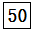
- 50
(정답률: 75%)
52. 기계제도에서 물체의 보이지 않는 부분의 형상을 나타내는 선은?
- 외형선
- 가상선
- 절단선
- 숨은선
(정답률: 65%)
53. 그림의 입체도에서 화살표 방향을 정면으로 하여 제3각법으로 그린 정투상도는?
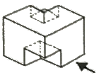
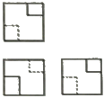
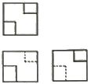
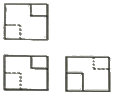
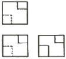
(정답률: 68%)
54. 그림의 도면에서 X 의 거리는?
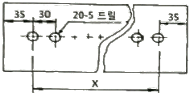
- 510㎜
- 570㎜
- 600㎜
- 630㎜
(정답률: 59%)
55. 다음 중 한쪽 단면도를 올바르게 도시한 것은?
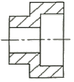
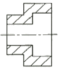
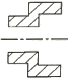
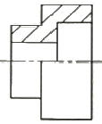
(정답률: 64%)
56. 다음 재료 기호 중 용접구조용 압연 강재에 속하는 것은?
- SPPS380
- SPCC
- SCW450
- SM400C
(정답률: 55%)
57. 그림과 같은 배관 도면에서 도시기호 S는 어떤 유체를 나타내는 것인가?
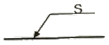
- 공기
- 가스
- 유류
- 증기
(정답률: 65%)
58. 주 투상도를 나타내는 방법에 관한 설명으로 옳지 않은 것은?
- 조립도 등 주로 기능을 나타내는 도면에서는 대상물을 사용하는 상태로 표시한다.
- 주 투상도를 보충하는 다른 투상도는 되도록 적게 표시한다.
- 특별한 이유가 없을 경우, 대상물을 세로 길이로 놓은 상태로 표시한다.
- 부품도 등 가공하기 위한 도면에서는 가공에 있어서 도면을 가장 많이 이용하는 공정에서 대상물을 놓은 상태로 표시한다.
(정답률: 59%)
59. 그림과 같은 입체도의 화살표 방향을 정면도로 표현할 때 실제와 동일한 형상으로 표시하는 면을 모두 고른 것은?
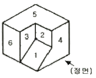
- 3 과 4
- 4 와 6
- 2 와 6
- 1 과 5
(정답률: 78%)
60. 그림에서 나타난 용접기호의 의미는?
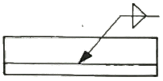
- 플래어 K형 용접
- 양쪽 필릿 용접
- 플러그 용접
- 프로젝션 용접
(정답률: 69%)